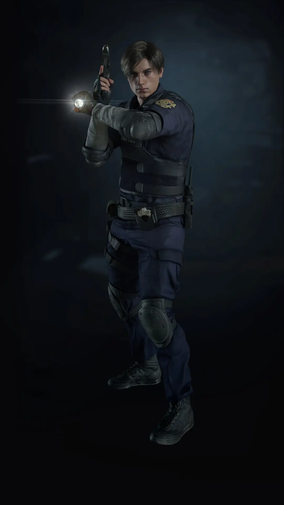

«Я сотру этот вирус с лица земли».
— Леон после вспышки в Гарвардвилле
Леон Скотт Кеннеди (англ. Leon Scott Kennedy) — американец итальянского происхождения, в настоящее время работающий федеральным агентом в Отделе операций по обеспечению безопасности (DSO), контртеррористическом агентстве, находящемся под прямым контролем президента США. Леон — один из немногих выживших в инциденте Раккун-Сити 1998 года, тогда он был офицером полиции. После тех событий Кеннеди вынужденно присоединился к сверхсекретному военному агентству при USSTRATCOM, занимающемся борьбой с биоорганическим оружием. Он служил в нём до 2011 года, участвуя в неоднократных операциях по всему миру.
Леон Скотт Кеннеди
